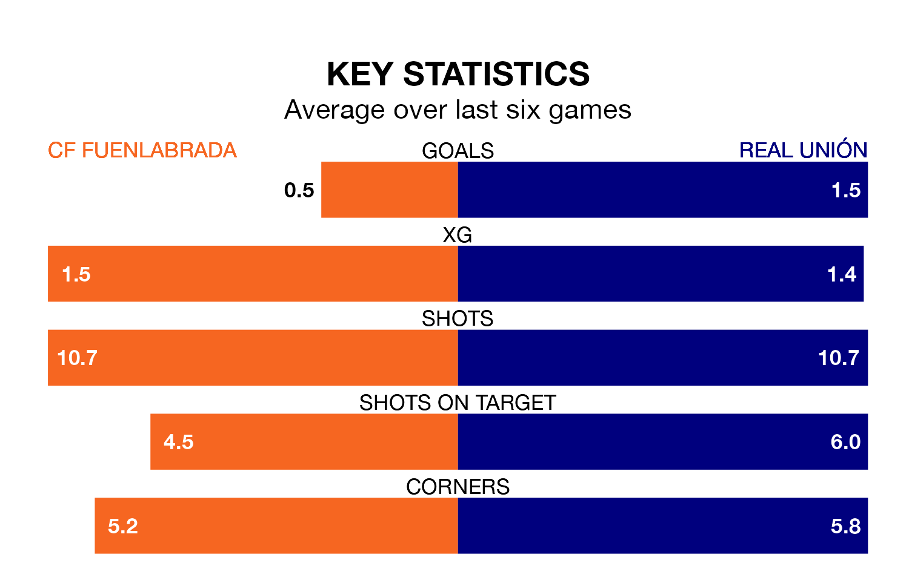

Real Unión face a challenge to maintain their high-scoring form away against a tight CF Fuenlabrada defence on Sunday.
With 28 goals in 18 games, Unión are the second-highest scorers in Primera Division RFEF Group 1 ahead of the 11am kick-off at the Estadio Fernando Torres.
They face a Fuenlabrada side who have scored 17 in 18 matches, but conceded only 15 goals, putting them joint-fourth among the league's tightest defences – only SD Ponferradina, Cultural y Deportiva Leonesa and Gimnàstic de Tarragona have conceded fewer goals.
Fuenlabrada are in disappointing form in Primera Division RFEF Group 1, with one win and three draws from their last six games.
With a win and two draws over that period, Unión's form is slightly worse – they have taken five points from 18, compared to the hosts' six.
Fuenlabrada are ninth in the table after 18 games, of which they have won six and drawn seven, earning 25 points.
The away team are two places behind Fuenlabrada in 11th, with seven wins and three draws putting them on 24 points.
Fuenlabrada's last match was on January 4, a 0-0 draw against Rayo Majadahonda.
Unión beat Sestao River Club 4-2 last time out, on January 3, with Alberto Solís Gómez, Antón Escobar Tapias, Asier Córdoba Querejeta and Enrique Rivero Pérez on the scoresheet.
Updated: 13:38 (UTC), 10/01/24